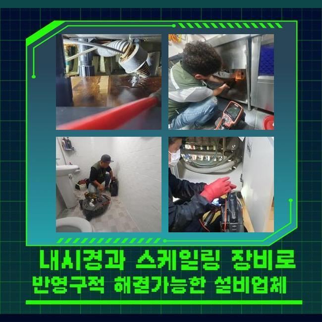
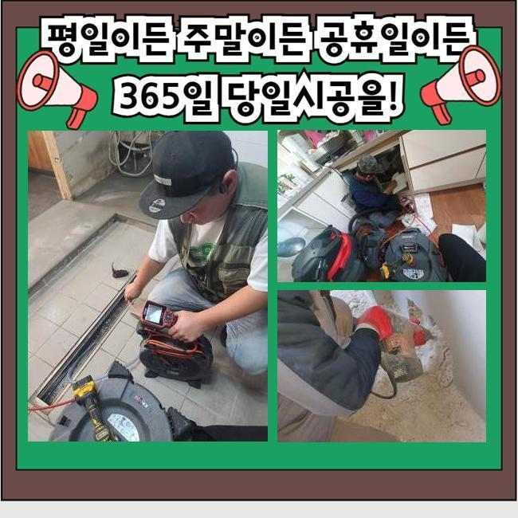
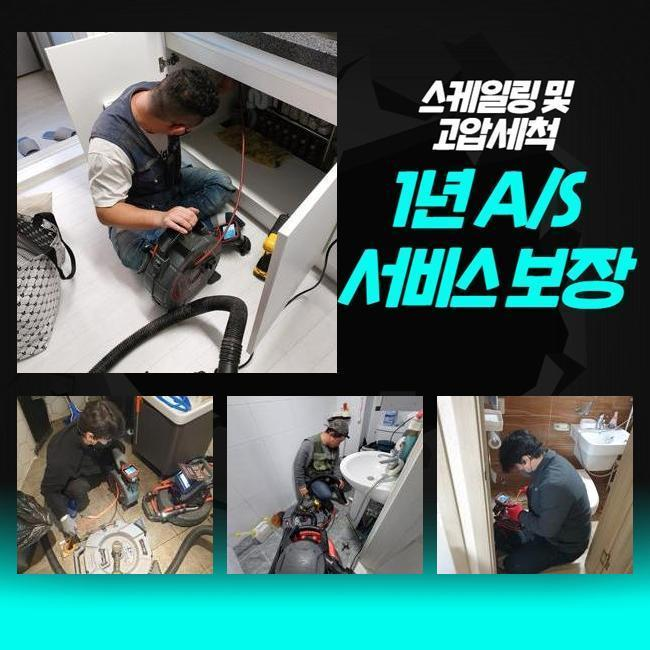
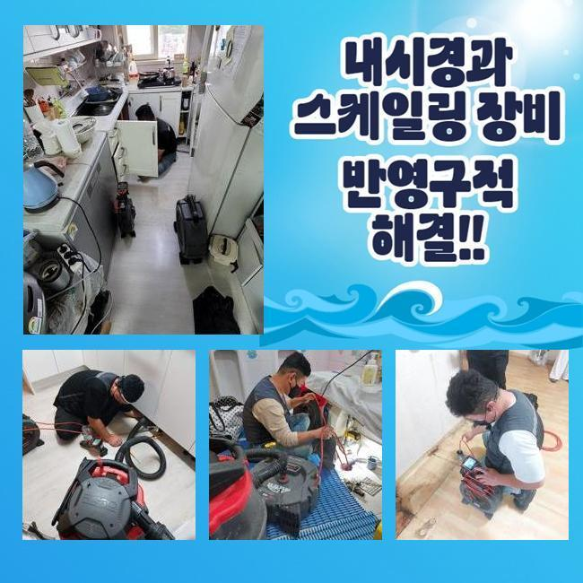
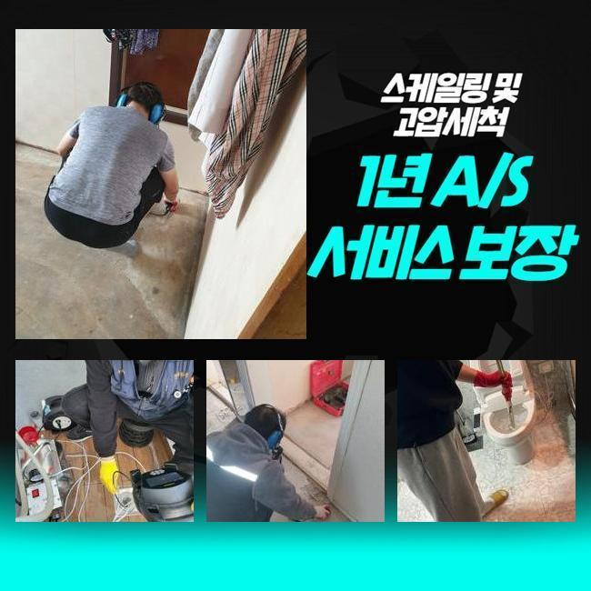
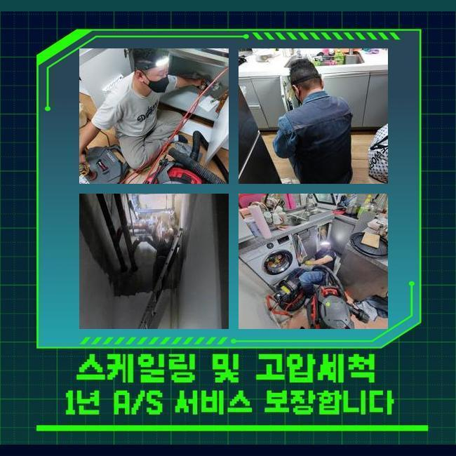

🏠 고양시 내유동씽크대배수구역류 흥도동 맨홀막힘 해결방법
고양 싱크대막힘 전문 시공 후기

📋 작업 개요
- 위치: 고양
- 서비스 유형: 싱크대막힘, 하수구막힘, 배관막힘, 맨홀막힘, 역류해결, 배관청소, 고압세척
- 작업 일시: 2024. 11. 9. 22:02
- 업체명: 하수구수사대 (010-5615-2118)
🔍 문제 상황
고양시 내유동씽크대배수구역류 흥도동 맨홀막힘 해결방법
배수로가 막혀있다면 독자분들은 어떤과정을 통해 처리하시나요
배수관의 전체적인 검사와 관리는 종종 꼭 필요해요 일부분이 찌꺼기로 막히기 시작할 경우 이 상황이 빠르게 대부분의 배관에 퇴적되어 더 커다란 문제를 일으킬 수 있기 때문이죠
배수로은 시기마다 점검과 세정을 실행하여 고유의 성능을 유지하도록 관리해야하며 이 것을 통해서 위생 관련 문제와 배수관로의 파손을 사전대처할 수 있어요
오늘은 음식점의 하수구 종합 점검 의뢰를 받고 기름찌꺼기 세정을 위해 영업중인 현장을 찾아가 배수구 막힘 세정을 실행 한 작업에 대해 안내해 드리겠습니다
우리가 찾아간 시공지는 음식점으로 전체적인 조사를 실시했는데요 우선 발코니 근처에 작은 싱크대가 추가로 딸려 있었어요
식당 대표 하수관이 아니라 뒷편에 있는 직원 휴식공간에 있는 개수대에서 막힘 현상이 나타났어요
개수대 밑 수납장에 설치된 주름 배관을 떼어내서 배관 안쪽을 조사해보기로 했어요
자바라를 분리하고 나면 하수구에 진입하기 쉬워지고 막힌이유를 확실히 알아낼 수 있어요
고객께서는 주방싱크에서 배수가 잘 되지 않고 있다고 말하셨기 때문에 이 지점부터 확실히 점검하고 하수관을 세척하기로 했습니다

🔎 원인 분석
💡 전문가 진단: 정밀 진단 장비를 사용하여 슬러지의 고착 여부를 판명하고 타격/세척 작업을 실시했습니다.
배수 호스를 떼어낸 후 내시경 카메라장비를 이용해 내부를 검사했는데 이 장비는 배관 속을 360도 살펴볼 수 있어 문제점이나 배관 시스템상 문제 등을 구체적으로 확인할 수 있습니다
카메라장치를 넣어 내부를 점검해보니 여러종류의 불순물들이 걸려있는 것을 포착할 수 있었어요
주로 기름찌꺼기와 먼지덩어리 등이 오랜기간 쌓여 물 빠짐이 되지 않는 장애요인이 되고 있었던 거죠
아무래도 설거지대는 기름슬러지 클리닝이 필요한데 기름슬러지와 먼지 및 이물질이 함께 엉켜서 빈틈없이 막힌 걸로 드러났습니다
이런 찌꺼기들은 배수로 내벽에 붙어 통수 되는 것을 저해하고 있었으며 지난날 주방싱크 이용시에도 하수가 시원히 빠지지 않았던 것을 의뢰인께 반복해서 확인했어요
청소를 할 때마다 하수가 고이는 증세를 보였었다고 하셨는데 오염물이 축적되어 배수로가 막히면서 하수가 빠지지 았았던 거죠
이런 상태를 해결하려면 적당한 기기를 이용해 정리해 주는 것이 필요했어요
배수구에 끼인 것들을 처리하기 위한 절차로는 부서트리는 접근법이 가장 효과적일 거라 생각되어 샤프트장비를 활용하기로 했습니다
가볍게 석션장비로 빨아들이기에는 오염물이 너무나 견고하게 고착되어 샤프트기구의 회전방식을 사용해 찌꺼기를 제거해야 했어요
이 것을 통해서 하수관 내의 이를 제거해고 물이 흐르는 것을 원활하게 회복할 수 있도록 할 수 있을 것으로 추정되었습니다
내시경 카메라기기를 사용해 배수구 내측을 라이브로 주시하면서 샤프트장치를 사용해 찌꺼기 부서트렸습니다

🔧 작업 과정
카메라장비를 통해 내부모습을 확인하며 굳어진 찌꺼기만 리스크없이 갈아낼 수 있게 기기를 조정했어요
분쇄를 하면서도 멈추지 않고 카메라장비를 이용하여 배수배수구 안쪽을 점검하며 정확하고 손상없이 시행하였어요
이 현장에서는 약제를 사용하거나 스프링 기구 를 사용하지 않고 샤프트기기를 이용하여 배수로의 오염물질을 깔끔하게 처리할 수 있었죠
샤프트장치는 빠르게 도는 힘을 이용하여 고착화 된 오염물을 갈아내고 찌꺼기를 석션기구로 흡착하여 정리하는 과정을 통해 일을 끝 마쳤어요
이런 방법을 사용하면 약품으로 인한 위험들을 낮추고 배수구에 타격을 유발하지 않으면서 효율적으로 시공할 수 있습니다
혹시 올바르지 않은 기기를 사용해 배수로에 타격을 가하면 배관이 파손되어 더 커다란 위기를 유발할 수 있습니다
알맞은 도구를 골라 안정적인 작업은 온전히 기사에게 달려있어서 실무 경험이 많은 전문기사에게 맡겨 처리하는게 안전할 것입니다
전문성이 낮은 곳에 문의한다면 불편하게 재차 배관이 막혀 골치를 앓을 수 있어요
그리고 나서 주방을 확인하니 기름찌꺼기와 찌꺼기가 매우 하수관 속안의 조건도 유사하게 상태가 좋지 않았어요
조리할 때 이용하는 기름과 작은 식재료들이 관에 쌓이면서 물길이 막히는 막힌이유가 되고 있어 즉각적인 수리가 필요하였습니다
이렇게 딱딱한 오염물로 배수관이 막힌 현상을 해결하려면 샤프트기구를 사용하여 오염물을 갈아내고 꺼내는 작업들을 마저 시행하였어요
작업을 마친 후에 고객에게 스크린을 통하여 배수관 속안의 모습을 보여드리면서 모든 잔여물이 청소하였음을 같이 확인했어요
샤프트장치에 걸려 배출된 먼지덩이들이 정말 많았어요
어찌 된 일인가 궁금했는데 화장실이 외부에 위치해 고객께서 휴식공간을 청소하고 개수대에서 청소도구 안쪽 먼지 보관함을 씻기도 한다고 하셨습니다
그렇게 자그마한 먼지덩어리가 축적되어 개수대 속 안을 꽉 채운 것 같은 상태였어요
내시경기구를 이용해 관 내측을 즉각 주시하면서 막힘이 발견되면 샤프트장비와 석션기기를 이용해 오염물질을 정리하는데 샤프트장치는 쇠사슬부분에 먼지덩이들이 지금처럼 엉켜 외부로 빠지는 결과도 발생해요


✅ 작업 완료
설거지대와 하부 배수로를 세심히 진단하고 깨끗이하여 전체 배수관이 원래대로 작동할 수 있게 했고 이렇듯 주방 쪽의 하수관을 하나하나 관측하고 클리닝함으로써 정체현상이 말끔히 해결되었어요
마지막으로 배수상태를 파악하기 위해 배수가 잘 되는지 점검했고 하수관이 원활히 통수되고 있는 것을 살펴볼 수 있었어요
이와 같은 하수관 막힘들을 막으려면 바깥 환경으로부터 하수관를 수호하고 오염물질들이 모이는 것을 사전조치 해주는 것이 필요합니다
하수구 입구를 덮어 외측의 오염물질 진입을 막음으로써 하수구의 위생을 유지해나가며 막힘 현상을 사전대처 할 수 있으므로 이런 처리는 현장상태에 따라 필수가 되기도 합니다
배수구 막힘상황으로 불편함을 겪던 의뢰인께 배관을 티끌 하나 없이 청결하게 세척한 과정을 설명해 드리고 차후에 배수로 클리닝 방법을 이야기 해드린 후 현장 마무리했습니다




⚠️ 주방 싱크대 배관 막힘 예방 수칙
- ✅ 기름기가 묻은 식기나 프라이팬은 설거지 전 키친타올로 반드시 기름때를 닦아내세요.
- ✅ 주기적으로 싱크대 개수대에 뜨거운 물을 가득 받아 한 번에 내려 배관 내부 기름을 씻어내세요.
- ✅ 배수구 거름망을 미세한 필터로 사용하시고 음식물 찌꺼기가 틈으로 새어 들지 않게 관리하세요.
- ✅ 베이킹소다와 식초를 뜨거운 물과 함께 일주일에 한 번씩 부어주면 배관 살균과 막힘 예방에 좋습니다.
💡 핵심 정리
- 확실한 장비 작업(내시경 점검 및 샤프트 스케일링)으로 원인을 뿌리 뽑습니다.
- 작업 후 1년 이내에 동일한 부위 재발 시 100% 무상 A/S 서비스를 보장합니다.
- 서울 · 경기 · 인천 전 지역에 24시간 언제든 긴급 출동할 수 있도록 항시 대기 중입니다.
❓ 자주 묻는 질문 (FAQ)
🚨 고양 싱크대막힘 문제로 고민이신가요?
정확한 원인 진단과 확실한 시공으로 재발 없는 해결을 약속드립니다.
24시간 긴급 출동 | 서울 · 경기 · 인천 전지역 | 1년 내 재발 시 무상 A/S